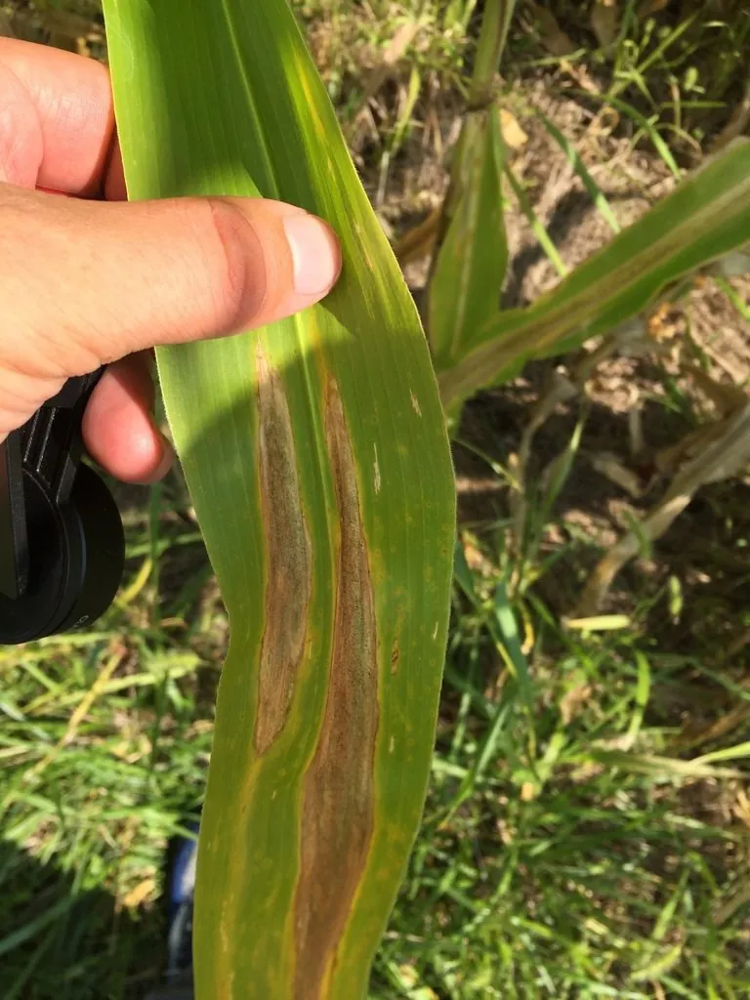

真菌 · 真菌界
玉米大斑病菌 Exserohilum turcicum

植物病原真菌，菌落灰褐至黑色，分生孢子舟形且具突脐，侵染玉米叶片形成长梭形大斑，导致明显减产。
- 分类
- 门子囊菌门纲座囊菌纲目格孢腔菌目科格孢腔菌科属突脐蠕孢属
- 栖息环境
- 玉米田，随病残体在土壤中越冬，中温高湿时流行
- 地理分布
- 世界玉米产区广布，中国东北、华北、西南玉米区均有发生
- 保护级别
- 暂无评估；作为重要农业病原广泛存在
物种志
玉米大斑病菌的菌落灰褐至黑褐色，绒毛状，生长中等。分生孢子梗单生或簇生，褐色，膝状弯曲；分生孢子舟形至梭形，淡褐至褐色，具多个横隔，两端细胞色浅，基部有明显的突脐，这是突脐蠕孢属的关键特征。有性阶段少见。
该菌侵染玉米叶片、叶鞘与苞叶，病斑初为水渍状青灰小点，后扩展为长梭形大斑，长可达 10–30 厘米，中央灰褐、边缘暗褐，潮湿时病斑上生灰黑色霉层。它随病残体在土壤中越冬，中温高湿时流行，严重时叶片枯死、灌浆不足，减产明显。防治以选用抗病品种、清除病残体、合理密植通风与发病初期喷药为主。它不感染人，但病粒可能携带其他霉菌毒素。
形态与习性
- 菌落灰褐至黑褐色，绒毛状
- 孢子分生孢子舟形，具横隔与明显突脐
- 寄主玉米的叶片、叶鞘与苞叶
- 症状长梭形大斑，中央灰褐、边缘暗褐
- 传播病残体越冬，孢子随风雨传播
- 防治抗病品种、清残体、合理密植、喷药
趣味知识
- 玉米大斑病的病斑可以长到 30 厘米，像被拉长的梭子，是玉米上最显眼的叶斑。
- 分生孢子基部有一个突出的“脐”，这是突脐蠕孢属的鉴定特征。
- 它随玉米秸秆等病残体越冬，所以秸秆还田后清茬与深翻很重要。
- 中温高湿、种植过密时发病最重，叶片提前枯死会直接影响灌浆。